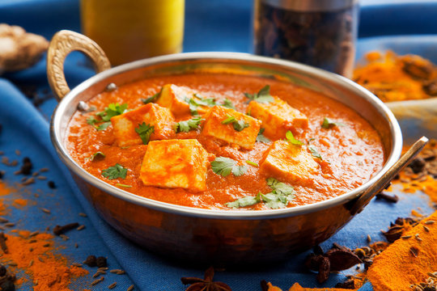

Paneer Butter Masala

Description
This Paneer Butter Masala recipe is a rich and creamy dish of paneer (Indian cottage cheese) in a tomato, butter and cashew sauce that is known here as “makhani gravy.” The acidity of the tomatoes and the sweetness of the cream make for a velvety, nearly addictive sauce
Ingredients
- Paneer(Indian Cottage Cheese)
- Butter
- Onions
- Ginger + Garlic
- Cashew nuts
- Tomatoes
- Tomato paste
- Kasoori methi
- Oil
- Sugar
- Cream
- whole Spices like bay leaf, cinnamon,black Cardamon and cloves
- Species such as Kashmiri red Chili powder,coriender powder,tumeric, garam masala and salt